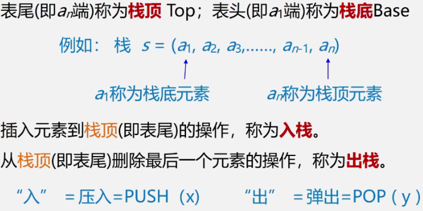

3/8 栈和队列
3.1 栈和队列的定义和特点
栈和队列是限定插入和删除只能在表的端点进行的线性表，是线性表的子集
3.1.1 栈：Stack
栈就像手电筒装电池、手枪弹夹里装子弹：有后进先出（Last In First Out）的特性
- 栈是仅在表尾进行插入删除操作的线性表，简称LIFO结构
- 它与一般线性表的区别：仅在于运算规则不同

- 案例1：进制转换

- 括号匹配的检验

- 表达式求值

3.1.2 队列Queue
队列就像排队，有先进先出（First In First Out）的特性，插入仅在表尾，删除仅在表头
- 舞伴问题

3.3 栈的定义和实现：顺序栈和链栈


3.3.2 顺序栈的实现


- 上溢(overflow):栈已经满，又要压入元素，使问题的处理无法进行
- 下溢(underflow):栈已经空，还要弹出元素，只认为是一种结束条件


顺序栈的长度=S.top-S.base，这里可以对指针加减，他会自动除以元素长度
删除时，删除base对应空间，长度设为0，两个指针设为空
入栈：先判断是否上溢，满则报错(也可以加空间），否则压入元素并让top加1
S.top=e; S.top++;或者S.top++=e;
- 出栈：先判断是否下溢，满则报错(也可以加空间）,否则获取元素出栈并让top-1
e=*- -S.top
3.3.2 链栈的实现
- 链栈是运算受限的单链表，只能在链表头部进行操作
- 注意链栈中指针的方向
链表的头指针就是栈顶
不需要头结点
基本不存在栈满的情况
空栈相当于头指针指向空
插入和删除仅在栈顶处执行


3.4 栈与递归


3.5 队列的表示和操作
凡是涉及使用有限资源，一切要用到排队的东西都要用到队列

3.5.1 顺序队列/队列的顺序表示
- 注意此处头指针和尾指针都是int型


- 解决假上溢的方法：将队空间设想成一个循环的表，即分配给队列的m个存储单元可以循环使用，当rear为maxqsize时，若向量的开始端空着，又可从头使用空着的空间。当front为maxqsize时,也是一样。——循环队列

如何判断真假上溢？如何判断队列满了？
1.另外设一个标志以区别队空、队满
2.另设一个变量，记录元素个数
3.少用一个元素空间

3.5.2 循环顺序队列


上文已经介绍了循环队列如何入队和出队，但记住额外判断队列是满还是空
3.5.3 链式队列

- 入队不用考虑上溢，出队要考虑下溢，同时如果出队的最后一个元素，还要额外修改尾指针


评论